| Up | Next | Prev | PrevTail | Tail |
This package provides a selection of functions that are useful in the world of linear algebra.
This package provides a selection of functions that are useful in the world of linear algebra. These functions are described alphabetically in subsection 16.37.3 and are labelled 16.37.3.1 to 16.37.3.53. They can be classified into four sections(n.b: the numbers after the dots signify the function label in section 16.37.3).
Contributions to this package have been made by Walter Tietze (ZIB).
| add_columns | … | 16.37.3.1 | add_rows | … | 16.37.3.2 |
| add_to_columns | … | 16.37.3.3 | add_to_rows | … | 16.37.3.4 |
| augment_columns | … | 16.37.3.5 | char_poly | … | 16.37.3.9 |
| column_dim | … | 16.37.3.12 | copy_into | … | 16.37.3.14 |
| diagonal | … | 16.37.3.15 | extend | ldots | 16.37.3.16 |
| find_companion | … | 16.37.3.17 | get_columns | … | 16.37.3.18 |
| get_rows | … | 16.37.3.19 | hermitian_tp | … | 16.37.3.21 |
| matrix_augment | … | 16.37.3.28 | matrix_stack | … | 16.37.3.30 |
| minor | … | 16.37.3.31 | mult_columns | … | 16.37.3.32 |
| mult_rows | … | 16.37.3.33 | pivot | … | 16.37.3.34 |
| remove_columns | … | 16.37.3.37 | remove_rows | … | 16.37.3.38 |
| row_dim | … | 16.37.3.39 | rows_pivot | … | 16.37.3.40 |
| stack_rows | … | 16.37.3.43 | sub_matrix | … | 16.37.3.44 |
| swap_columns | … | 16.37.3.46 | swap_entries | … | 16.37.3.47 |
| swap_rows | … | 16.37.3.48 |
Functions that create matrices.
| band_matrix | … | 16.37.3.6 | block_matrix | … | 16.37.3.7 |
| char_matrix | … | 16.37.3.8 | coeff_matrix | … | 16.37.3.11 |
| companion | … | 16.37.3.13 | hessian | … | 16.37.3.22 |
| hilbert | … | 16.37.3.23 | mat_jacobian | … | 16.37.3.24 |
| jordan_block | … | 16.37.3.25 | make_identity | … | 16.37.3.27 |
| random_matrix | … | 16.37.3.36 | toeplitz | … | 16.37.3.50 |
| Vandermonde | … | 16.37.3.52 | Kronecker_Product | … | 16.37.3.53 |
| char_poly | … | 16.37.3.9 | cholesky | … | 16.37.3.10 |
| gram_schmidt | … | 16.37.3.20 | lu_decom | … | 16.37.3.26 |
| pseudo_inverse | … | 16.37.3.35 | simplex | … | 16.37.3.41 |
| svd | … | 16.37.3.45 | triang_adjoint | … | 16.37.3.51 |
There is a separate NORMFORM[1] package for computing the following matrix normal forms in REDUCE:
smithex, smithex_int, frobenius, ratjordan, jordansymbolic, jordan.
| matrixp | … | 16.37.3.29 | squarep | … | 16.37.3.42 |
| symmetricp | … | 16.37.3.49 |
In the examples the matrix  will be
will be
Throughout is used to indicate the identity matrix and T to indicate the transpose of
the matrix .
If you have not used matrices within REDUCE before then the following may be helpful.
Initialisation of matrices takes the following syntax:
mat1 := mat((a,b,c),(d,e,f),(g,h,i));
will produce
mat1 := 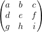
The (i,j)th entry can be accessed by:
mat1(i,j);
The package is loaded by:
load_package linalg;
,c1,c2,expr);
| | :- | a matrix. |
| c1, c2 | :- | positive integers. |
| expr | :- | a scalar expression. |
by,c1) + column(,c2)..
| add_columns(,1,2,x) = 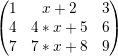 | |||||||
| add_rows(,2,3,5) = 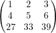 |
See: add_columns.
,column_list,expr);| | :- | a matrix. |
| column_list | :- | a positive integer or a list of positive integers. |
| expr | :- | a scalar expression. |
.
add_to_rows performs the equivalent task on the rows of .
| add_to_columns(,{1,2},10) = 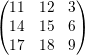 | |||||||
| add_to_rows(,2,-x) = 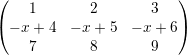 |
See: add_to_columns.
,column_list);| | :- | a matrix. |
| column_list | :- | either a positive integer or a list of positive integers. |
specified in column_list and
sticks them together. .
| augment_columns(,{1,2}) = 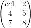 | |||||||
| stack_rows(,{1,3}) = 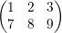 |
| expr_list | :- | either a single scalar expression or a list of an odd number of scalar expressions. |
| square_size | :- | a positive integer. |
band_matrix({x,y,z},6) = 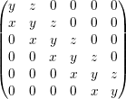
| r,c | :- | positive integers. |
| matrix_list | :- | a list of matrices. |
= 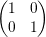, = , = , = 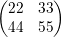 = 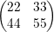 | |||||||
| block_matrix(2,3,{,,,,,}) = 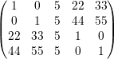 |
,λ); | :- | a square matrix. |
| λ | :- | a symbol or algebraic expression. |
of . This is = λ-.
char_matrix(,x) = 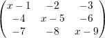
,λ); | :- | a square matrix. |
| λ | :- | a symbol or algebraic expression. |
.
This is the determinant of λ-.
,x) = x3 - 15 * x2 - 18 * x
); | :- | a positive definite matrix containing numeric entries. |
.
It returns { ,
, } where is a lower matrix, is an upper matrix, = , and = T .
} where is a lower matrix, is an upper matrix, = , and = T .
 = 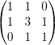 = 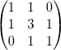 | |||||||
| cholesky() = 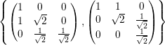 |
| lin_eqn1,lin_eqn2, …,lin_eqnn | :- | linear equations. Can be of the form equation = number or just equation which is equivalent to equation = 0. |
of the linear equations. It returns
{,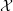,} such that = .
| coeff_matrix({x + y + 4 * z = 10,y + x - z = 20,x + y + 4}) = | |||||||
| 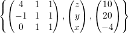 |
); | :- | a matrix. |
. .
) = 3
| poly | :- | a monic univariate polynomial in x. |
| x | :- | the variable. |
of poly.
This is the square matrix of dimension n, where n is the degree of poly w.r.t. x.
The entries of are: (i,n) = -coeffn(poly,x,i - 1) for i = 1,…,n,
(i,i - 1) = 1 for i = 2,…,n and the rest are 0.
companion(x4 + 17 * x3 - 9 * x2 + 11,x) = 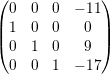
,,r,c);| , | :- | matrices. |
| r,c | :- | positive integers. |
into with (1,1) at (r,c).
| 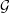 = 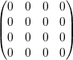 | |||||||
| copy_into(,,1,2) = 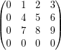 |
| mat1,mat2, …,matn | :- | each can be either a scalar expr or a square matrix. |
 = 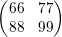 = 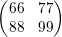 | |||||||
| diagonal({,x,}) = 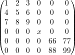 |
,r,c,expr);| | :- | a matrix. |
| r, c | :- | positive integers. |
| expr | :- | algebraic expression or symbol. |
that has been extended by r rows and c columns. The
new entries are made equal to expr.
extend(,1,2,x) = 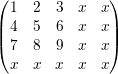
,x); | :- | a matrix. |
| x | :- | the variable. |
| = 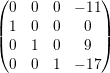 | |||||||
| find_companion(,x) = x4 + 17 * x3 - 9 * x2 + 11 |
,column_list); | :- | a matrix. |
| c | :- | either a positive integer or a list of positive integers. |
specified in column_list and
returns them as a list of column matrices.
get_rows performs the same task on the rows of .
| get_columns(,{1,3}) = 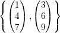 | |||||||
| get_rows(,2) = 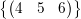 |
See: get_columns.
| vec1,vec2, …,vecn | :- | linearly-independent vectors. Each vector must be written as a list, eg:{1,0,0}. |
); | :- | a matrix. |
.
This is a matrix in which the (i,j)th entry is the conjugate of the (j,i)th entry of
.
 = =  | |||||||
| hermitian_tp( ) = 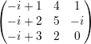 |
| expr | :- | a scalar expression. |
| variable_list | :- | either a single variable or a list of variables. |
This is an n×n matrix where n is the number of variables and the (i,j)th entry is df(expr,variable_list(i),variable_list(j)).
hessian(x * y * z + x2,{w,x,y,z}) = 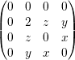
| square_size | :- | a positive integer. |
| expr | :- | an algebraic expression. |
This is the symmetric matrix in which the (i,j)th entry is 1∕(i + j -expr).
hilbert(3,y + x) = 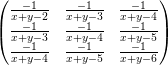
| expr_list | :- | either a single algebraic expression or a list of algebraic expressions. |
| variable_list | :- | either a single variable or a list of variables. |
This is a matrix whose (i,j)th entry is df(expr_list(i),variable_list(j)). The matrix is n × m where n is the number of variables and m the number of expressions.
| mat_jacobian({x4,x * y2,x * y * z3},{w,x,y,z}) = | |||||||
| 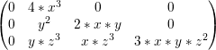 |
NOTE: The function mat_jacobian used to be called just "jacobian" however us of that name was in conflict with another Reduce package.
| expr | :- | an algebraic expression or symbol. |
| square_size | :- | a positive integer. |
of dimension
square_size.
The entries of are: (i,i) = expr for i = 1,…,n, (i,i + 1) = 1 for
i = 1,…,n - 1, and all other entries are 0.
jordan_block(x,5) = 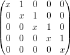
); | :- | a matrix containing either numeric entries or imaginary entries with numeric coefficients. |
, ie: it returns {,} where is a
lower diagonal matrix, an upper diagonal matrix and = .
Caution: The algorithm used can swap the rows of during the calculation. This
means that does not equal but a row equivalent of it. Due to this,
lu_decom returns {,,vec}. The call convert(,vec) will return the
matrix that has been decomposed, ie: = convert(,vec).
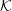 = 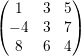
| lu := lu_decom() = | 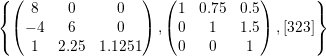 |
| first lu * second lu | = 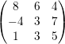 | ||||||
| convert(,third lu) | = 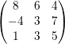 |
 = 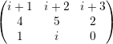
= 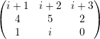
| lu := lu_decom() = | 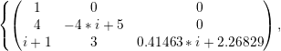 | ||
| 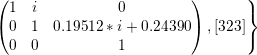 |
| first lu * second lu | = 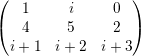 | ||||||
| convert(,thirdlu) | = 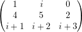 |
| square_size | :- | a positive integer. |
make_identity(4) = 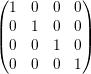
| mat1,mat2, …,matn | :- | matrices. |
matrix_stack sticks the matrices in matrix_list together vertically.
| matrix_augment({,}) = 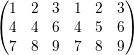 | |||||||
| matrix_stack({,}) = 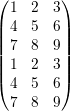 |
| test_input | :- | anything you like. |
) = t
matrixp(doodlesackbanana) = nil
See: matrix_augment.
,r,c); | :- | a matrix. |
| r, c | :- | positive integers. |
.
This is created by removing the rth row and the cth column from .
minor(,1,3) = 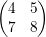
,column_list,expr);| | :- | a matrix. |
| column_list | :- | a positive integer or a list of positive integers. |
| expr | :- | an algebraic expression. |
in which the columns specified in
column_list have been multiplied by expr.
mult_rows performs the same task on the rows of .
| mult_columns(,{1,3},x) = | |||||||
| mult_rows(,2,10) = |
See: mult_columns.
,r,c); | :- | a matrix. |
| r,c | :- | positive integers such that (r,c)≠0. |
about its (r,c)th entry.
To do this, multiples of the r’th row are added to every other row in the matrix.
This means that the c’th column will be 0 except for the (r,c)’th entry.
pivot(,2,3) =
); | :- | a matrix containing only real numeric entries. |
.
Given the singular value decomposition of , i.e: = Σ T , then the pseudo
inverse † is defined by † = Σ†T . For the diagonal matrix Σ, the
pseudoinverse Σ† is computed by taking the reciprocal of only the nonzero
diagonal elements.
T , then the pseudo
inverse † is defined by † = Σ†T . For the diagonal matrix Σ, the
pseudoinverse Σ† is computed by taking the reciprocal of only the nonzero
diagonal elements.
If is square and non-singular, then † = . In general, however, † = ,
and †† = †.
Perhaps more importantly, † solves the following least-squares problem: given a
rectangular matrix and a vector b, find the x minimizing ∥x - b∥2, and
which, in addition, has minimum ℓ2 (euclidean) Norm, ∥x∥2. This x is
†b.
| r,c, limit | :- | positive integers. |
| imaginary | :- | if on, then matrix entries are x + iy where -limit < x,y < limit. |
| not_negative | :- | if on then 0 < entry < limit. In the imaginary case we have 0 < x,y < limit. |
| only_integer | :- | if on then each entry is an integer. In the imaginary case x,y are integers. |
| symmetric | :- | if on then the matrix is symmetric. |
| upper_matrix | :- | if on then the matrix is upper triangular. |
| lower_matrix | :- | if on then the matrix is lower triangular. |
| random_matrix(3,3,10) = | |||||||
| on only_integer, not_negative, upper_matrix, imaginary; | |||||||
| random_matrix(4,4,10) = | |||||||
,column_list);| | :- | a matrix. |
| column_list | :- | either a positive integer or a list of positive integers. |
.
remove_rows performs the same task on the rows of .
| remove_columns(,2) | = | ||||||
| remove_rows(,{1,3}) | = |
See: remove_columns.
See: column_dim.
,r,c,{row_list});| | :- | a matrix. |
| r,c | :- | positive integers such that (r,c) neq 0. |
| row_list | :- | positive integer or a list of positive integers. |
 = = | |||||||||||
| rows_pivot(,2,3,{4,5}) | = |
| max/min | :- | either max or min (signifying maximise and minimise). |
| objective function | :- | the function you are maximising or minimising. |
| linear inequalities | :- | the constraint inequalities. Each one must be of the form sum of variables (<=,=,>=) number. |
| bounds | :- | bounds on the variables as specified for the LP file format. Each bound is of one of the forms l ≤ v, v ≤ u, or l ≤ v ≤ u, where v is a variable and l, u are numbers or infinity or -infinity |
It returns {optimal value,{ values of variables at this optimal}}.
The {bounds} argument is optional and admissible only when the switch fastsimplex is on, which is the default.
Without a {bounds} argument, the algorithm implies that all the variables are non-negative.
); | :- | a matrix. |
| = | |||||||
| squarep() = t | |||||||
| squarep() = nil |
See: augment_columns.
,row_list,column_list);| | :- | a matrix. |
| row_list, column_list | :- | either a positive integer or a list of positive integers. |
sub_matrix(,{1,3},{2,3}) =
); | :- | a matrix containing only real numeric entries. |
. If A is an m × n real
matrix of (column) rank r, svd returns the 3-element list {,Σ,} where
= ΣT .
Let k = min(m,n). Then U is m × k, V is n × k, and and Σ = diag(σ1,…,σk),
where σi ≥ 0 are the singular values of ; only r of these are non-zero. The
singular values are the non-negative square roots of the eigenvalues of
T .
and are such that T = T = T = k.
Note: there are a number of different definitions of SVD in the literature, in some of which Σ is square and U and V rectangular, as here, but in others U and V are square, and Σ is rectangular.
 = = | |||||||
svd() =
 svd(TP()) =
svd(TP()) =
|
,c1,c2);| | :- | a matrix. |
| c1,c1 | :- | positive integers. |
with column c2.
swap_rows performs the same task on 2 rows of .
swap_columns(,2,3) =
,{r1,c1},{r2,c2});| | :- | a matrix. |
| r1,c1,r2,c2 | :- | positive integers. |
(r1,c1) with (r2,c2).
swap_entries(,{1,1},{3,3}) =
See: swap_columns.
); | :- | a matrix. |
| = | |||||||
| symmetricp() = nil | |||||||
| symmetricp() = t |
| expr1,expr2, …,exprn | :- | algebraic expressions. |
This is a square symmetric matrix in which the first expression is placed on the diagonal and the i’th expression is placed on the (i-1)’th sub and super diagonals.
It has dimension n where n is the number of expressions.
toeplitz({w,x,y,z}) =
); | :- | a matrix. |
triang_adjoint computes the triangularizing adjoint of matrix due to
the algorithm of Arne Storjohann. is lower triangular matrix and the resulting
matrix of * = is upper triangular with the property that the i-th entry in
the diagonal of is the determinant of the principal i-th submatrix of the matrix
.
| triang_adjoint() = | |||||||
| * = |
| expr1,expr2, …,exprn | :- | algebraic expressions. |
vandermonde({x,2 * y,3 * z}) =
| M1,M2 | :- | Matrices |
By turning the fast_la switch on, the speed of the following functions will be increased:
| add_columns | add_rows | augment_columns | column_dim |
| copy_into | make_identity | matrix_augment | matrix_stack |
| minor | mult_column | mult_row | pivot |
| remove_columns | remove_rows | rows_pivot | squarep |
| stack_rows | sub_matrix | swap_columns | swap_entries |
| swap_rows | symmetricp |
The increase in speed will be insignificant unless you are making a significant number(i.e: thousands) of calls. When using this switch, error checking is minimised. This means that illegal input may give strange error messages. Beware.
Many of the ideas for this package came from the Maple[3] Linalg package [4].
The algorithms for cholesky, lu_decom, and svd are taken from the book Linear Algebra - J.H. Wilkinson & C. Reinsch[5].
The gram_schmidt code comes from Karin Gatermann’s Symmetry package[6] for REDUCE.
[1] Matt Rebbeck: NORMFORM: A REDUCE package for the computation of various matrix normal forms. ZIB, Berlin. (1993)
[2] Anthony C. Hearn: REDUCE User’s Manual 3.6. RAND (1995)
[3] Bruce W. Char…[et al.]: Maple (Computer Program). Springer-Verlag (1991)
[4] Linalg - a linear algebra package for Maple[3].
[5] J. H. Wilkinson & C. Reinsch: Linear Algebra (volume II). Springer-Verlag (1971)
[6] Karin Gatermann: Symmetry: A REDUCE package for the computation of linear representations of groups. ZIB, Berlin. (1992)
| Up | Next | Prev | PrevTail | Front |